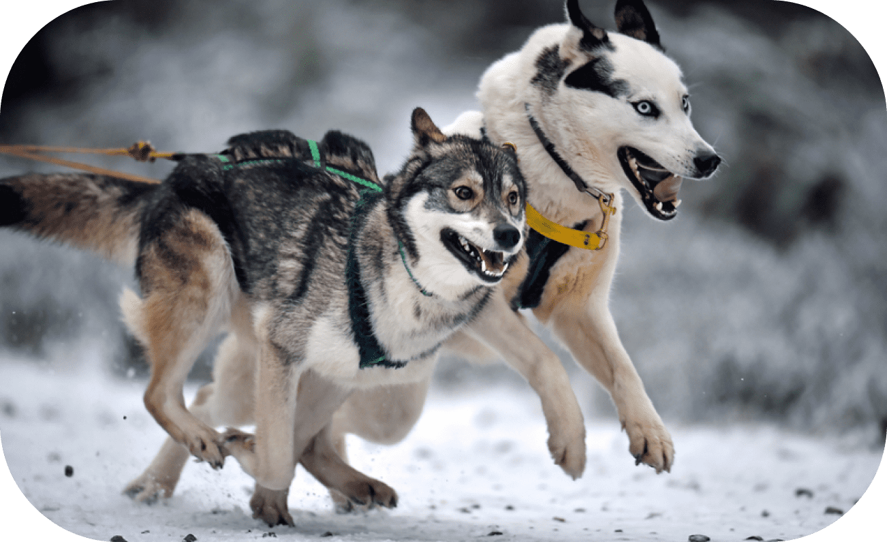

Snow Dogs

HISTORY
The evolutionary history of sled dogs
Humans living in the Arctic region 9,500 years ago have begun to use sled dogs to transport
supplies over long distances. The common ancestor of modern sled dogs is the Siberian husky
nearly 10,000 years ago.
Apart from these three breeds, there are other types of sled dogs such as Greenland sled
dogs. According to research, its DNA is related to Siberian wolves and Zuhov dogs, including
the genes of Greenland dogs.
Differs from the diet and appearance of other dog breeds
Sled dogs have lived and worked together with the Arctic Inuit for more than 9,500 years and
have adapted to the Arctic environment.
Although sled dogs are not as well adapted to sugar and starch-rich foods as other dogs,
they are well adapted to high-fat diets.
Their evolution still retains the appearance of beasts, because they do not need cute
appearance to attract humans, they regard humans as working partners.
They are the fastest dog breeds that have been screened out, with well-developed limbs, strong and powerful, smart and sensitive, and self-judgment. The ability of each breed is different: Siberian Husky is focused on quickness and agility, while the Alaskan Malamute is training endurance.
Differs from the diet and appearance of other dog breeds
Sled dogs have lived and worked together with the Arctic Inuit for more than 9,500 years
and have adapted to the Arctic environment.
Although sled dogs are not as well adapted to sugar and starch-rich foods as other dogs,
they are well adapted to high-fat diets.
Their evolution still retains the appearance of beasts, because they do not need cute
appearance to attract humans, they regard humans as working partners.
They are the fastest dog breeds that have been screened out, with well-developed limbs,
strong and powerful, smart and sensitive, and self-judgment. The ability of each breed
is different: Siberian Husky is focused on quickness and agility, while the Alaskan
Malamute is training endurance.